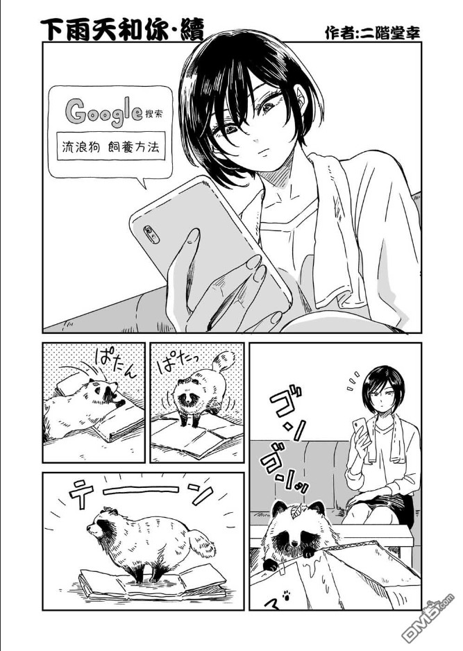
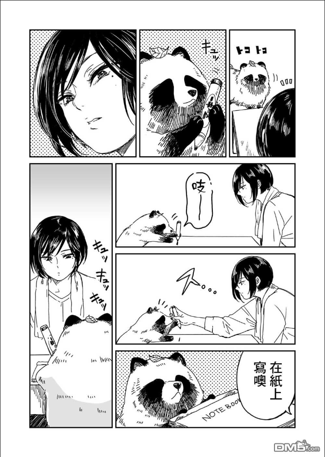

我們觸碰發燙的石子
讓浪濺濕褲腳的邊緣，說些日常中被反覆提起的玩笑話
.jpg)
.jpg)


讓浪濺濕褲腳的邊緣，說些日常中被反覆提起的玩笑話
攀往象山觀景台的路上稀疏地佇立著幾盞老舊的路燈，微弱且粗大的光線顆粒逐漸發散而成扇狀， 最後打在陳年剝落的石階上，時而閃爍不定，時而能看見有些蚊蟲盤旋其中。 沿途，風刮地樹葉窸窣作響。老妹跟大姐尚在遠遠的後頭，在我拐了一個轉角後，便望不見了。我 站在燈下揉搓冰冷的手，等待她們，總感覺黑暗的樹叢裡，有隻貘正望著我。
貘，專食人們的夢境維生。
方才在居酒屋裡就著下酒菜，喝了些生啤。滿櫃子五光十色的酒罐裡感覺塵封了許多夢境，好的壞 的，在各個大大小小的瓶子裡隱隱躁動著。而酒保使勁搖晃著調酒器，混雜而倒出的七彩調酒，便是現實。 觀景台上的風有些冷冽，但我甫經少許酒精與登山活動的身驅卻如火炬般發燙著。 往下凝視，許多光點匯聚而成一幅美麗的圖像。 藍光。黃光。紅光。綠光。 每個光點裡藏身著多少個人，多少心事，多少夢。這是座充滿夢想的城市，理應 也充滿著許多貘。
若貘能專食惡夢，該有多好。那貘便能是隱身於城市中的安然。
回程，我們三人悠閒地挽著手一蹬一蹬地下山。聊些無關緊要的瑣事，說些無傷 大雅的玩笑話。後來不知不覺雙腳已踏到溫暖的平地，置身於鵝黃色的都市彩燈中。
或許，我們早已成為彼此的貘，成為彼此的安然。
青苔堵塞於石罅間，一股潮濕的土味攀沿著空氣偷溜進我的鼻間，並不十分難聞，反而有著剛曬完太陽的枕頭味道。 茂密的樹叢以霸道的姿態阻止了太陽的前行，黑壓壓的一片樹影錯落於蟬的屍體之間，甚至夾雜於低矮的草叢枝枒，形成 一種突兀的點綴。 沿途的草似乎都被踏禿了，上頭彷彿還留有某種動物咬嚙過後的齒痕，有著很淡很淡的人類腳印，我試著用我的腳印 填滿妳遺留下來的陳跡，卻漏了一大塊無法彌補的空隙。穿著新買的白色休閒鞋，踏於剝落了藍色油漆的平衡木上，我無 意間揚起了許多粉塵，灰撲撲的一片，又瞬間四散不見，向後看，有個巨大又熟悉的影子攀在我的身後，然後於我身後不 斷的膨脹，能清晰感覺周圍的溼氣開始順著我的腳踝往上蔓延、蔓延，而後我不斷掙扎、嘶喊，直到黑色而冰冷的溪水將 我淹沒。 「是我。」聽見了妳如細小泡沫般的聲音後，我鬆了一口氣。 睜開眼睛，沼綠色的天花板上，歪歪扭扭的畫了顆星星，還有一顆剝蝕了的愛心。潮濕的枕頭、太過空曠的雙人床， 房間裡飄著一股令人作嘔的味道。 兒時時常玩耍的公園、如墨般的影子、冰冷黏膩的溪水。 妳失蹤的日子已經邁入第五天，這幾天我不斷做著重複絕望的夢。 床旁水泥的地板上縱橫散落的鞋印大小不一與乾涸的紅色顏料，形成一股詭譎的畫面，我兀自發楞著，努力回想最後 一次與妳說過的話。忽地，我想起了妳可能會在哪裡，胡亂衝去窄小的浴廁間隨意用水抹了抹臉，我瞥見洗水槽髒舊的排 水孔裡，似乎已長出黑色的青苔，順著水流悻悻的擺動著。 隱約間遠方似乎傳來妳不耐的催促聲，我抓起昨夜早已準備好的背袋，推開總是發出嘎滋聲響的大門，急忙往妳的所 在方向奔去。 曾經我以為平淡就是一段情感能抵達的，最奢侈大方的終末。
就像是說好的一樣，陰雨綿綿的日子，我與妳總只有一個人記得帶傘；又或是偷偷揣度彼此的心思，猶豫著是否要將 傘藏入凌亂不堪的抽屜中。雨滴落於傘上，再各自散開如水色的彈珠，就像是計數著此刻通往未來的鐘擺。將傘放低，我 數看著經過眼前的鞋，七彩的小帆船，揚帆後便漸漸隱沒於傘下有限的視野中，我盼著，盼得唯一的那艘熟悉駐足。 「如鏡面的雙生女。」他們是那麼說的。 我們最先會說的是彼此的名字，穿著對方的鞋，背著同款顏色的書包，在數不清的日子裡都擠於小小的被窩裡，像是 擁擠的水族箱裡吐著泡泡的兩條魚，每天都能擁著全世界的幸福與知足笑著入睡。 在生字簿上練習三遍「喜歡」。這兩個字的筆劃實在太多了，無論我怎麼練習，寫起來總是醜醜的，或是超出格子一 大截。但老師說，這個字的意思就是很想一直擁有或是待在一起的事物。 山上的水氣頓時又濕重了起來，我在樹影重重中看見了一道熟悉的影子，是妳。我得小跑步才能跟上妳帶有慍怒的步 伐。我想像著妳此刻的表情，微微鼓起的雙頰和上揚的眉顯得格外稚氣。再轉個彎就可以望見遼闊的遠方了，我不禁暗自 竊喜著，揉揉早已痠痛不堪的小腿。此時，妳卻停下腳步，稍早未落的雨緩緩地自穹頂降落於妳肩上。我急忙抽出背包側 邊的傘，抬頭卻望見妳刻意別開的視線。 妳的手上同樣也握著一把傘，細緻的臉已被些許的雨水濡濕，彷彿裹上了一層迷霧，漸漸變得陌生，我情不自禁地走 向妳。 妳的手因沾了點水氣而有些冰冷。 後來的事我都記不清楚了，唯一記得的是，妳被水草與嫣紅的花瓣所吞噬的臉龐已失去了血色...... 如同不小心摔破水族箱的那天，我知道這件事其實對父母來說沒什麼大不了的，我瞪著媽媽踩著室內塑膠鞋啪噠啪噠地走 向奄奄一息的金魚，此刻牠仍於破碎的玻璃間掙扎跳動著。媽媽一臉嫌棄的像是在看一團噁心至極的肉團，將奄奄一息的 金魚丟入老舊的馬桶中，不靈光的馬桶一邊發出乾嘔的聲響，一邊還是勉強的用微弱的水流將牠納於世界的另一個地方。 而另一隻金魚不知道為什麼，我翻遍了整個客廳，但再也沒有看到過。 登山出口旁的池塘已被雨水蓄滿。依稀，我似乎從傘沿的水幕間窺見彼此於生命的最初相遇時的場景，一切都是那麼 模糊又清晰。 只差最後一步就能見到妳了，我從背包裡拿出早已準備好的繩索，將它牢牢的繫於一顆茂密的榕樹下，然後向跟前的 石階一跨。 那天，妳似乎忘了，妳遺落下了名為回憶的雨季，而我也沒能對妳說。
一點螢火忽明
好希望緊湊與平緩總有一天能夠和好
不對稱的色塊能被世界看到
但在願望達成之前
我好像只能就這樣坐著和你一起
等不同口味的冰珠化掉
後來想想，也挺好
再遠一點的海域我們都望不著
如同烈日曬傷後的
隱隱作痛
只是偶爾的
無傷大雅的一場夢
兜了一大圈
還是決定好好活著
即使不能曬個太陽
半瞇著眼
便獲得全然寵溺的擁抱
有種時差
是對於你所愛之人的
生活
與
所思所想
再也插不上一句話